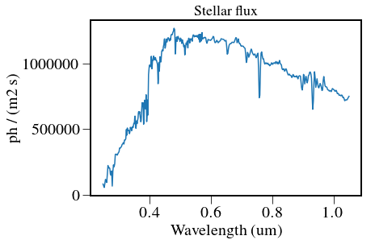
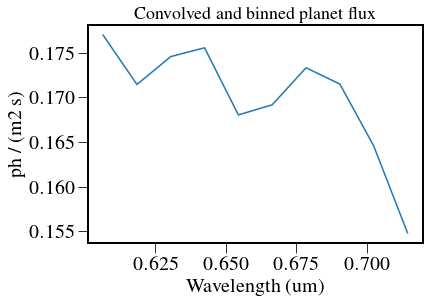
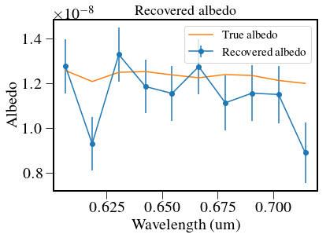
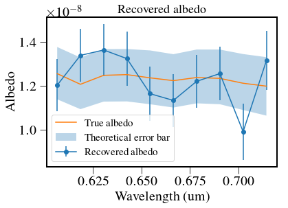

Analytical model¶
This is an analytical model to construct a simple SNR of a given spectrum.
In [1]:
%pylab inline --no-import-all
plt.rc('font', family='serif', serif='Times',size=15)
plt.rc('text', usetex=True)
plt.rc('xtick', labelsize=20)
plt.rc('xtick.major', size=10)
plt.rc('ytick.major', size=10)
plt.rc('ytick', labelsize=20)
plt.rc('axes', labelsize=20)
plt.rc('figure',titlesize=25)
plt.rcParams['image.origin'] = 'lower'
plt.rcParams['image.interpolation'] = 'nearest'
plt.rcParams['axes.linewidth'] = 2.
from astropy.io import fits
import astropy.units as u
import astropy.constants as c
import pandas as pd
import logging as log
from crispy.tools.initLogger import getLogger
log = getLogger('main')
from crispy.tools.image import Image
import os
os.chdir('/Users/mrizzo/IFS/crispy/crispy/WFIRST/')
from params import Params
par = Params()
par.hdr
from scipy.interpolate import interp1d
import pandas as pd
from astropy.table import Table,QTable
from crispy.tools.detutils import rebin
from scipy import ndimage
from IPython.display import display
Populating the interactive namespace from numpy and matplotlib
In [2]:
def IFSModel(datafile,
minlam=700*u.nm,
maxlam=841*u.nm,
Vmag = 4.83,
R=50,
QEfile=None,
QELosses = 0.9*0.97*0.9*0.78, # losses on top of QE
verbose=True,
cic=2e-2*u.ct, # CIC
dark = 2.24e-4*u.ct/u.s, # dark current
zodi = 7.6e-4*u.ct/u.s, # total zodiacal contribution
CFcontrast = 2.6e-9,
I_pk = 1.4e-3,
mpix=24, # Noise equivalent pixels
cgi_mpix=32, # used for speckle estimates (will ask Bijan)
sp_tau = 0.34, # speckle throughput
tau=0.0116, # planet throughput
A = 3.68*u.m**2, # aperture size
mult=1.32,
fpp=0.1,
obstime=100*3600*u.s,
ftime = 100*u.s, # frame exposure time
forceSNR=10,
ntrials = 1000,
):
# load QE
loadQE = np.loadtxt(QEfile)
QE = interp1d(loadQE[:,0]/1000,loadQE[:,1])
# Load Sergi's table
table = pd.read_table(datafile,
names=('wavelength','albedo','contrast','star','flux'),
delimiter=',')
if verbose:
plt.figure()
plt.plot(table['wavelength'],table['albedo'])
plt.title('Albedo')
plt.xlabel('Wavelength (um)')
plt.ylabel('Albedo')
# load stellar spectra
fname = par.codeRoot+'/Inputs/ETC/Spectra.csv'
st = pd.read_csv(fname,skip_blank_lines=True,)
stars = QTable.from_pandas(st)
stars['Wavelength (m) '].unit = u.m
stars.rename_column('Wavelength (m) ', 'Wavelength')
stars['E_ph (J)'].unit = u.J/u.ph
stars.rename_column('E_ph (J)', 'E_ph')
cols = ['a0v','a5v','f5v','g0v','g5v','k0v','k5v','m0v','m5v']
for col in cols:
stars[col].unit = u.W/u.m**2/u.m
star_ph_flux = (stars['g0v']/stars['E_ph']*u.nm).to(u.ph/u.s/u.m**2)
# Adjust for stellar magnitude
star_ph_flux *= 10**(-0.4*Vmag)
if verbose:
plt.figure()
plt.plot(stars['Wavelength'].to(u.um),star_ph_flux)
plt.title('Stellar flux')
plt.xlabel('Wavelength (um)')
plt.ylabel(r'{:}'.format(star_ph_flux.unit))
# Compute photons from planet
# first, need to make sure both wavelength axes boundaries are compatible
albedo = interp1d(table['wavelength'],table['contrast'])
wl = stars['Wavelength'].to(u.um)
star_ph_flux = star_ph_flux[wl.value>np.amin(table['wavelength'])]
wl = wl[wl.value>np.amin(table['wavelength'])]
star_ph_flux = star_ph_flux[wl.value<np.amax(table['wavelength'])]
wl = wl[wl.value<np.amax(table['wavelength'])]
# then we can multiply simply
planet_ph_flux = star_ph_flux*albedo(wl)
if verbose:
plt.figure()
plt.plot(wl,planet_ph_flux)
plt.title('Planet flux')
plt.xlabel('Wavelength (um)')
plt.ylabel(r'{:}'.format(planet_ph_flux.unit))
# Focus on IFS band
wmax = maxlam.to(u.um).value
wmin=minlam.to(u.um).value
planet_ph_flux = planet_ph_flux[wl.value>wmin]
star_ph_flux = star_ph_flux[wl.value>wmin]
wl = wl[wl.value>wmin]
planet_ph_flux = planet_ph_flux[wl.value<wmax]
star_ph_flux = star_ph_flux[wl.value<wmax]
wl = wl[wl.value<wmax]
if verbose:
plt.figure()
plt.plot(wl,planet_ph_flux)
plt.title('Planet flux')
plt.xlabel('Wavelength (um)')
plt.ylabel(r'{:}'.format(planet_ph_flux.unit))
# convolve with IFS line spread function
dlam = wl[1]-wl[0]
midlam = 0.5*(maxlam.to(u.um).value+minlam.to(u.um).value)
Dlam = midlam/R
FWHM = Dlam/dlam
nbins = int(round((maxlam.to(u.um).value-minlam.to(u.um).value)/Dlam)+1)
if verbose:
print("FWHM is {:} original bins".format(FWHM.value))
print("Number of IFS bins is {:}".format(nbins))
pl_ph_flux2 = ndimage.filters.gaussian_filter1d(planet_ph_flux,FWHM.value/2.35,order=0,mode='nearest')
pl_ph_flux = pl_ph_flux2.reshape(nbins,len(pl_ph_flux2)/nbins).sum(-1)*planet_ph_flux.unit
st_ph_flux2 = ndimage.filters.gaussian_filter1d(star_ph_flux,FWHM.value/2.35,order=0,mode='nearest')
st_ph_flux = st_ph_flux2.reshape(nbins,len(star_ph_flux)/nbins).sum(-1)*star_ph_flux.unit
w = wl.reshape(nbins,len(planet_ph_flux)/nbins).mean(-1)
if verbose:
plt.figure()
plt.plot(wl,pl_ph_flux2)
plt.title('Convolved planet flux')
plt.xlabel('Wavelength (um)')
plt.ylabel(r'{:}'.format(planet_ph_flux.unit))
plt.figure()
plt.plot(w,pl_ph_flux)
plt.title('Convolved and binned planet flux')
plt.xlabel('Wavelength (um)')
plt.ylabel(r'{:}'.format(planet_ph_flux.unit))
# calculate rates
pl_ph = pl_ph_flux*A*tau
effQE = QE(w)*QELosses
pl_e_rate = pl_ph*effQE*u.count/u.ph
st_e_rate = st_ph_flux*A*effQE*u.count/u.ph
speckle = st_e_rate*cgi_mpix*sp_tau*I_pk*CFcontrast
phconv_rate = (zodi+speckle+pl_e_rate)
perpxrate = dark+phconv_rate/mpix
if verbose: print('Rate per pixel: {:}'.format(perpxrate))
# determine contributions and SNR
shotnoise = np.sqrt((pl_e_rate+mult*(speckle+zodi))*obstime)
elecnoise = np.sqrt(mult*mpix*(dark+cic/ftime)*obstime)
spnoise = fpp*speckle*obstime
SNR = pl_e_rate*obstime/(shotnoise.value+elecnoise.value+spnoise.value)
if verbose:
# print('Signal counts: {:}'.format(pl_e_rate*obstime))
# print('Shot noise: {:}'.format(shotnoise))
# print('Detector noise: {:}'.format(elecnoise))
# print('Speckle noise: {:}'.format(spnoise))
# print('SNR: {:}'.format(SNR))
df = pd.DataFrame({'Wavelength':w,
'Signal': pl_e_rate*obstime,
'Shot noise': shotnoise,
'Detector noise': elecnoise,
'Speckle noise': spnoise,
'Total noise': np.sqrt(shotnoise.value**2+elecnoise.value**2+spnoise.value**2),
'Signal': pl_e_rate*obstime,
'SNR': SNR,
})
df.set_index('Wavelength')
display(df[['Wavelength','Shot noise','Detector noise','Speckle noise','Total noise','Signal','SNR']])
vals = albedo(w)
if forceSNR is not None:
N = len(SNR)
SNRnorm = SNR.value*forceSNR/SNR[N/2].value
else:
SNRnorm = SNR.value
output = np.random.normal(vals,vals/SNRnorm)
if verbose:
plt.figure()
plt.errorbar(w.value,output,yerr=vals/SNRnorm,fmt='-o',label='Recovered albedo')
plt.plot(w.value,vals,label='True albedo')
plt.title('Recovered albedo')
plt.xlabel('Wavelength (um)')
plt.ylabel('Albedo')
plt.legend()
if ntrials is not None:
sim = np.zeros((N,ntrials))
for i in range(ntrials):
sim[:,i] = np.random.normal(vals,vals/SNRnorm)
if verbose:
plt.figure()
plt.errorbar(w.value,sim[:,ntrials/2],yerr=np.std(sim,axis=1),fmt='-o',label='Recovered albedo')
plt.plot(w.value,vals,label='True albedo')
plt.fill_between(w.value,
np.mean(sim,axis=1)-np.mean(sim,axis=1)/SNRnorm,
np.mean(sim,axis=1)+np.mean(sim,axis=1)/SNRnorm,
alpha=0.3,label='Theoretical error bar')
plt.title('Recovered albedo')
plt.xlabel('Wavelength (um)')
plt.ylabel('Albedo')
plt.legend()
output = sim
return output
In [3]:
output = IFSModel(par.codeRoot+"/Inputs/LAS_spectra_for_exospec_bright_comparison_0deg_g0.0_EDC_012618_by_SRH.txt",
minlam=700*u.nm,
maxlam=841*u.nm,
Vmag = 4.83,
R=50,
QEfile=par.codeRoot+"/QE_CCD201.txt")
np.savetxt("/Users/mrizzo/Downloads/770.txt",output.T)
FWHM is 15.41 original bins
Number of IFS bins is 10
Rate per pixel: [ 0.00047046 0.00045194 0.00044611 0.00043245 0.00041695 0.00040974
0.00039666 0.00038722 0.00037705 0.00036233] ct / s
| Wavelength | Shot noise | Detector noise | Speckle noise | Total noise | Signal | SNR | |
|---|---|---|---|---|---|---|---|
| 0 | 0.7075 | 48.457534 | 69.538732 | 40.988660 | 94.147959 | 1445.930294 | 9.094763 |
| 1 | 0.7215 | 46.688310 | 69.538732 | 38.379618 | 92.132668 | 1312.035382 | 8.486280 |
| 2 | 0.7355 | 46.101200 | 69.538732 | 37.106560 | 91.311843 | 1274.362027 | 8.342987 |
| 3 | 0.7495 | 44.682688 | 69.538732 | 33.747331 | 89.280794 | 1189.925857 | 8.041738 |
| 4 | 0.7635 | 43.050884 | 69.538732 | 30.859930 | 87.414810 | 1084.875535 | 7.562767 |
| 5 | 0.7775 | 42.279086 | 69.538732 | 29.744725 | 86.648168 | 1033.738733 | 7.302346 |
| 6 | 0.7915 | 40.829298 | 69.538732 | 27.403450 | 85.168162 | 944.154027 | 6.853044 |
| 7 | 0.8055 | 39.741595 | 69.538732 | 25.501463 | 84.055662 | 881.623088 | 6.541114 |
| 8 | 0.8195 | 38.531735 | 69.538732 | 23.375352 | 82.865777 | 814.987983 | 6.200182 |
| 9 | 0.8335 | 36.721643 | 69.538732 | 20.552893 | 81.280598 | 716.028854 | 5.646324 |


In [4]:
output = IFSModel(par.codeRoot+"/Inputs/LAS_spectra_for_exospec_bright_comparison_0deg_g0.0_EDC_012618_by_SRH.txt",
minlam=600*u.nm,
maxlam=721*u.nm,
Vmag = 4.83,
R=50,
QEfile=par.codeRoot+"/QE_CCD201.txt",
QELosses = 0.9*0.97*0.9*0.81, # losses on top of QE
verbose=True,
cic=2e-2*u.ct, # CIC
dark = 2.24e-4*u.ct/u.s, # dark current
zodi = 1.1e-3*u.ct/u.s, # total zodiacal contribution
CFcontrast = 2.2e-9,
I_pk = 1.4e-3,
mpix=20, # Noise equivalent pixels
cgi_mpix=32, # used for speckle estimates (will ask Bijan)
sp_tau = 0.34, # speckle throughput
tau=0.0144, # planet throughput
A = 3.68*u.m**2, # aperture size
mult=1.32,
fpp=0.1,
ftime = 100*u.s,
obstime=100*3600*u.s,
forceSNR=10,
ntrials = 1000,)
np.savetxt("/Users/mrizzo/Downloads/660.txt",output.T)
FWHM is 13.21 original bins
Number of IFS bins is 10
Rate per pixel: [ 0.00059654 0.00058734 0.00059149 0.00059135 0.00057608 0.00057532
0.00057835 0.00057064 0.00055371 0.00053182] ct / s
| Wavelength | Shot noise | Detector noise | Speckle noise | Total noise | Signal | SNR | |
|---|---|---|---|---|---|---|---|
| 0 | 0.6065 | 54.074869 | 63.479887 | 35.955632 | 90.810764 | 1926.757105 | 12.551314 |
| 1 | 0.6185 | 53.445697 | 63.479887 | 35.519613 | 90.265062 | 1864.863588 | 12.233010 |
| 2 | 0.6305 | 53.725229 | 63.479887 | 35.538038 | 90.438092 | 1894.578180 | 12.403686 |
| 3 | 0.6425 | 53.708975 | 63.479887 | 35.310242 | 90.339157 | 1895.838789 | 12.431803 |
| 4 | 0.6545 | 52.631492 | 63.479887 | 33.870532 | 89.145852 | 1800.262982 | 12.003201 |
| 5 | 0.6665 | 52.582523 | 63.479887 | 33.971384 | 89.155329 | 1793.779438 | 11.955836 |
| 6 | 0.6785 | 52.795588 | 63.479887 | 34.177945 | 89.359958 | 1813.505261 | 12.053599 |
| 7 | 0.6905 | 52.243623 | 63.479887 | 33.399684 | 88.739118 | 1765.800316 | 11.841218 |
| 8 | 0.7025 | 51.013388 | 63.479887 | 31.801822 | 87.426641 | 1659.861657 | 11.345983 |
| 9 | 0.7145 | 49.377715 | 63.479887 | 29.723788 | 85.740063 | 1523.084761 | 10.682213 |






